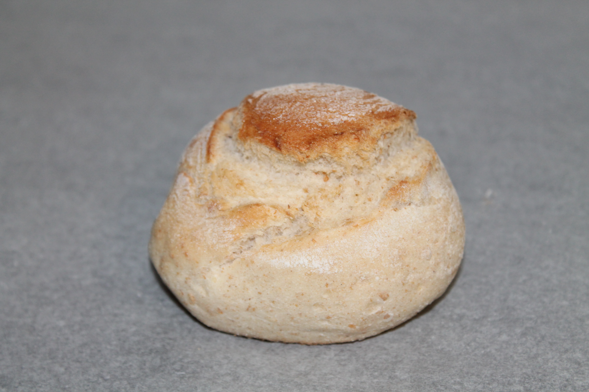

Home
Serviços
Quem Somos
Contactos
Padaria e Pastelaria
Flor de Santa Apolonia.
×
×
×
×
×

×
×
×
×
×
×
Sopa do Dia
Segunda-Feira
Terça-Feira
Quarta-Feira
Quinta-Feira
Sexta-Feira
Sopa de Legumes
Sopa de Feijão Verde
Sopa de Caldo Verde
Sopa de Peixe
Sopa de Legumes com Grãos